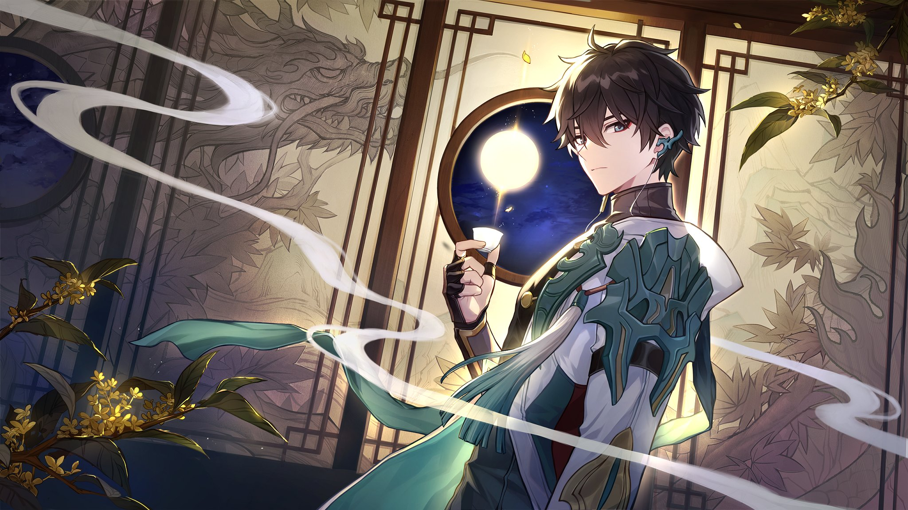

1. Genshin Impact
Genshin Impact is an open-world action RPG developed and published by miHoYo. The game was released on September 28, 2020, for multiple platforms including PC, PlayStation 4, PlayStation 5, iOS, and Android.
Gameplay:
In Genshin Impact, players take on the role of a traveler who has been separated from their sibling and stranded in the magical world of Teyvat. The game features a vast open world with beautiful landscapes, diverse regions, and hidden secrets waiting to be discovered.
Players can explore the world on foot or by using various means of transportation such as gliding, swimming, and climbing. The game features a real-time combat system where players can switch between different characters to create powerful combos and take down their enemies.
Each character has unique abilities, elemental powers, and weapon types, which can be upgraded and customized using in-game resources. Players can also cook food, craft items, and engage in various activities such as fishing, mining, and hunting to obtain resources and improve their characters.
The game also features a gacha system that allows players to obtain new characters and weapons by spending in-game currency or real money. Genshin Impact also has a multiplayer co-op mode, allowing players to team up with up to three other players to explore the world and complete challenges together.
Updates:
Since its release, Genshin Impact has received several updates with new characters, regions, events, and gameplay features. miHoYo is known for providing regular updates and content for its games, and Genshin Impact is no exception.
Overall, Genshin Impact is an immersive and visually stunning game that offers a vast open world and engaging gameplay that keeps players coming back for more.
2. Onmyoji
Onmyoji is a free-to-play turn-based strategy game developed and published by NetEase. The game was originally released for mobile devices in China in 2016, and later released for PC and Nintendo Switch in 2018.
Gameplay:
In Onmyoji, players take on the role of powerful Japanese spirits known as shikigami, who can be summoned and commanded by the player in battles against evil spirits and other players. The game features a variety of shikigami, each with their own unique abilities, strengths, and weaknesses.
Players can participate in different game modes, including story mode, PvP battles, and co-op battles against powerful bosses. The game features a turn-based combat system where players take turns to attack, defend, and use special abilities.
Players can also collect and upgrade different types of souls to improve their shikigami's stats and abilities. The game also features a gacha system that allows players to obtain new shikigami and souls by spending in-game currency or real money.
Onmyoji also features an immersive storyline with beautiful art and music inspired by Japanese folklore and mythology. The game offers a rich world with various locations to explore and different characters to interact with.
Updates:
Since its release, Onmyoji has received several updates with new shikigami, game modes, and other features. NetEase is known for providing regular updates and content for its games, and Onmyoji is no exception. The game also has a dedicated community that shares tips, strategies, and fan art.
Overall, Onmyoji offers a deep and engaging gameplay experience with beautiful visuals and an immersive storyline. It is a great game for fans of Japanese mythology, turn-based strategy games, and gacha games.
3. Honkai: Star Rail

Honkai Star Rail is an upcoming mobile game developed and published by miHoYo, the same company behind popular games like Genshin Impact and Honkai Impact 3rd. The game is set in a sci-fi universe and features fast-paced action gameplay with RPG elements.
Release Date:
As of my knowledge cutoff in September 2021, there was no official release date announced for Honkai Star Rail. However, miHoYo has announced that the game would be released globally for both Android and iOS platforms on April 26, 2023.
Gameplay:
Honkai Star Rail is an action-packed game that allows players to take control of a variety of characters with unique abilities, weapons, and skills. The game features a 3D environment where players can explore different planets, fight enemies, and complete missions.
In combat, players can switch between different characters to create powerful combos and take down their enemies. Each character has their own special abilities and attacks, which can be upgraded and customized using in-game resources.
Players can also customize their characters' appearance with different costumes and accessories. The game features a gacha system that allows players to obtain new characters and weapons by spending in-game currency or real money.
Overall, Honkai Star Rail promises to deliver an immersive and action-packed experience for fans of mobile games.
System Requirements
Genshin Impact
| Minimum Requirements | Recommended Requirements | |
|---|---|---|
| Operating System | Windows 7 SP1 64-bit, Windows 8.1 64-bit, or Windows 10 64-bit | Windows 10 64-bit |
| Processor (CPU) | Intel Core i5 or equivalent | Intel Core i7 or equivalent |
| Graphics Card (GPU) | NVIDIA GeForce GT 1030 or equivalent | NVIDIA GeForce GTX 1060 or equivalent |
| Memory (RAM) | 8 GB | 16 GB or more |
| Storage Space | 50 GB available space | 100 GB available space or more |
| Internet Connection | Broadband internet connection | Broadband internet connection |
Onmyoji
| Minimum Requirements | Recommended Requirements | |
|---|---|---|
| Operating System | Windows 7 64-bit or later | Windows 10 64-bit |
| Processor (CPU) | Intel Core i3 or equivalent | Intel Core i5 or equivalent |
| Graphics Card (GPU) | NVIDIA GeForce GTX 660 or equivalent | NVIDIA GeForce GTX 970 or equivalent |
| Memory (RAM) | 4 GB | 8 GB or more |
| Storage Space | 10 GB available space | 10 GB available space or more |
| Internet Connection | Broadband internet connection | Broadband internet connection |
Honkai: Star Rail
| Minimum Requirements | Recommended Requirements | |
|---|---|---|
| Operating System | Windows 7 64-bit or later | Windows 10 64-bit |
| Processor (CPU) | Intel Core i5 or equivalent | Intel Core i7 or equivalent |
| Graphics Card (GPU) | NVIDIA GeForce GTX 750 Ti or equivalent | NVIDIA GeForce GTX 1050 Ti or equivalent |
| Memory (RAM) | 8 GB | 16 GB or more |
| Storage Space | 30 GB available space | 30 GB available space or more |
| Internet Connection | Broadband internet connection | Broadband internet connection |